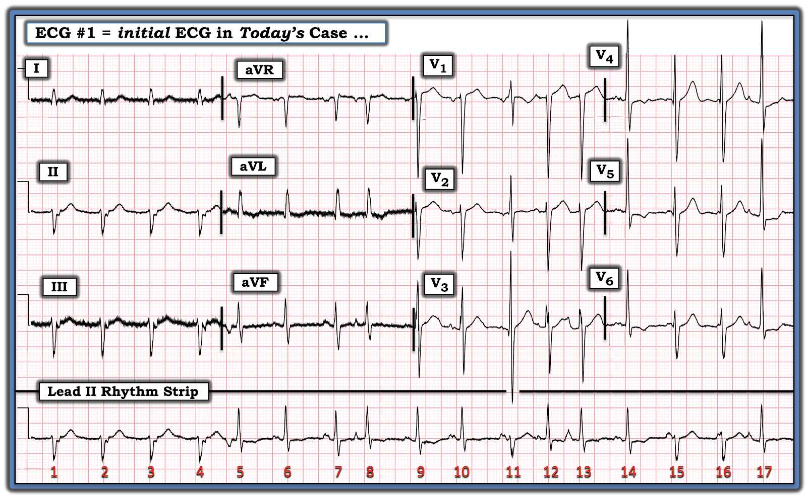
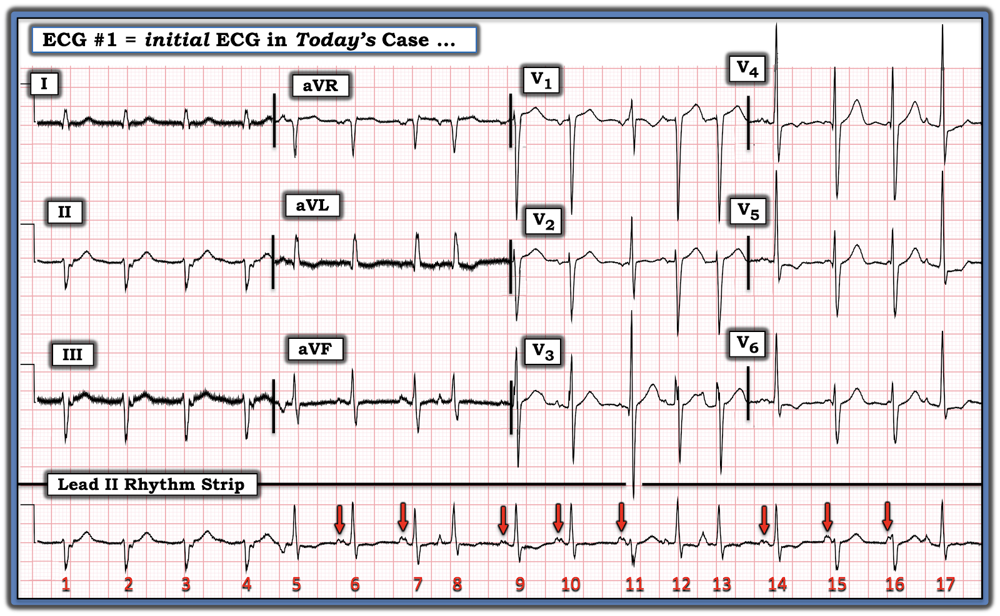
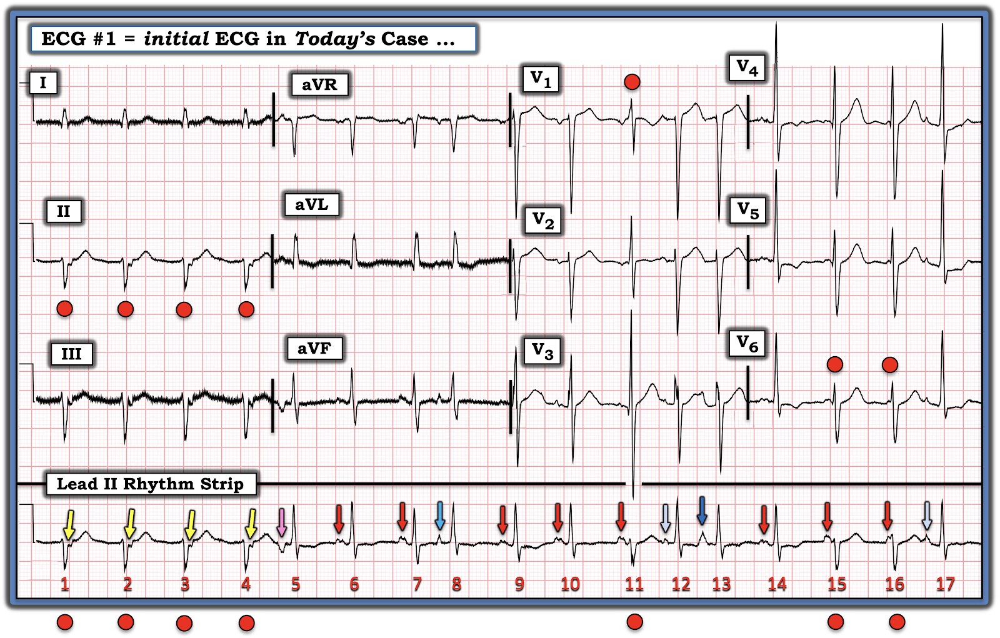
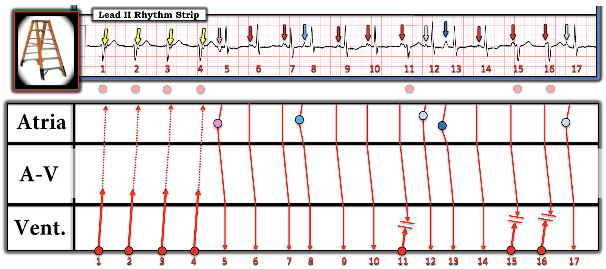
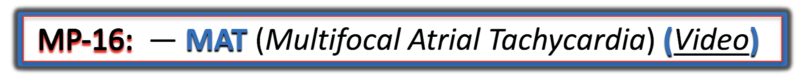

ECG Blog #428 — Nên làm đến mức nào ở tuổi 92?
Tôi nhận được bản ghi trong Hình 1 — kèm các thông tin sau:
- Bệnh nhân 92 tuổi có tiền sử "rối loạn nhịp đã biết" và tăng huyết áp.
- Bệnh nhân không có triệu chứng tại thời điểm ghi điện tâm đồ #1 — điện tâm đồ có lẽ được ghi vì nghe tim thấy nhịp không đều.
CÂU HỎI:
- BẠN sẽ diễn giải nhịp trong Hình 1 như thế nào?
- Nên làm đến mức nào cho bệnh nhân 92 tuổi này?
- Điểm cộng: Tay hay chân nào chịu trách nhiệm chính cho nhiễu thấy trên điện tâm đồ ban đầu hôm nay?


Trả lời câu hỏi ĐIỂM Cộng:
Để bắt đầu với câu trả lời cho câu hỏi Điểm cộng — tôi nghi ngờ nguyên nhân của các dao động đường nền bất thường thấy trong Hình 1 là nhiễu do run cơ (Xem Bouthillet T — ACLS Med Training, Dec, 2015). Chỉ cần NHÌN nhanh bệnh nhân là có thể xác nhận điều này — nhưng tiếc là tôi không có thông tin nào về vẻ ngoài của bệnh nhân.
- LƯU Ý: Các dao động đường nền bất thường trong Hình 1 lớn nhất ở chuyển đạo I,III và aVL — vừa phải ở chuyển đạo aVF — và nhỏ nhất ở chuyển đạo II, đồng thời cũng rất nhỏ ở 6 chuyển đạo trước ngực. Do đó — chi "thủ phạm" chịu trách nhiệm chính cho nhiễu trên bản ghi hôm nay là LA (tay trái — Left Arm).
- Như đã bàn chi tiết trong ECG Blog #255 — Chúng ta có thể xác định chi "thủ phạm" vì kích thước tương đối của các dao động nhiễu trong Hình 1 thể hiện đúng tỉ lệ được dự đoán khi một chi đơn lẻ chịu trách nhiệm chính cho một kiểu nhiễu nhất định.
- ĐIỂM THEN CHỐT (PEARL) #1: Việc một chi chịu trách nhiệm chính cho một kiểu nhiễu nhất định — có thể nhận ra nhanh qua dấu hiệu biên độ nhiễu xấp xỉ bằng nhau ở 2 trong 3 chuyển đạo chi chuẩn (tức là, ở chuyển đạo I và III trong Hình 1) — và, nhiễu rất ít hoặc không thấy chút nào ở chuyển đạo chi chuẩn thứ 3 (tức là, nhiễu rất ít ở chuyển đạo II).
- Theo tam giác Einthoven (Xem ECG Blog #255) — dấu hiệu biên độ nhiễu bằng nhau ở chuyển đạo I và chuyển đạo III định vị chi “thủ phạm” là điện cực LA ( = tay trái — Left Arm).
- Biên độ nhiễu giảm rõ rệt ở chuyển đạo II phù hợp với điều này — vì chuyển đạo chi chuẩn lưỡng cực II được tạo ra từ hiệu điện thế giữa điện cực RA ( = tay phải — Right Arm) và LL ( = chân trái — Left Leg), hai điện cực này không bị ảnh hưởng nếu nguồn nhiễu là tay trái.
- MẸO NHANH (Tìm chi "thủ phạm" trong vài giây!): Khi 2 chuyển đạo chi chuẩn cho thấy biên độ nhiễu lớn nhất xấp xỉ bằng nhau — và chuyển đạo chi chuẩn thứ 3 cho thấy nhiễu rất ít hoặc không có — thì chuyển đạo tăng thế nào có biên độ lớn nhất sẽ chỉ ra chi "thủ phạm" (mà trong Hình 1 là chuyển đạo aVL = nghĩa là LA là chi "thủ phạm").
====================================
Quay lại Ca bệnh HÔM NAY:
- BẠN sẽ diễn giải nhịp trong Hình 1 như thế nào?
- Nên làm đến mức nào cho bệnh nhân 92 tuổi này?
====================================
SUY NGHĨ Ban đầu CỦA TÔI:
Xét về mặt rối loạn nhịp — tôi thấy nhịp trong ca hôm nay thật hấp dẫn.
- Dù vậy — bệnh nhân này cao tuổi và không có triệu chứng, điều này đặt ra các câu hỏi: Đánh giá đến mức nào? — và — Xử trí lâm sàng nào sẽ là tối ưu?
Theo thông tin ngắn gọn được cung cấp — bệnh nhân hôm nay có tiền sử "rối loạn nhịp đã biết". Vì vậy, vấn đề thứ 1 nảy ra trong ca hôm nay là — Rối loạn nhịp mà bệnh nhân này "đã biết" là gì?
- Cho đến nay — nguyên nhân thường gặp nhất của nhịp không đều ở một bệnh nhân cao tuổi không có triệu chứng là AFib (rung nhĩ — Atrial Fibrillation).
- NẾU bệnh nhân này bị AFib — thì cần xác định nhu cầu kiểm soát tần số và/hoặc sự đồng ý có hiểu biết của bệnh nhân (và/hoặc của gia đình, nếu bệnh nhân không còn minh mẫn) về lợi và hại của thuốc chống đông.
- Nói vậy — tôi không được biết thêm chi tiết nào về tiền sử bệnh của bệnh nhân này — và, nhịp trong ca hôm nay không phải là AFib.
====================================
CÁCH diễn giải Nhịp Hôm nay:
"Tin tốt" — là bệnh nhân cao tuổi trong ca hôm nay không có triệu chứng. Điều này có nghĩa là chúng ta có ít nhất một chút thời gian để cố gắng tìm ra nhịp trong Hình 1. Những nhận xét ban đầu của tôi gồm:
- Nhịp rõ ràng không đều.
- Có 2 hình dạng QRS khác nhau. Đó là: i) Nhát #1-đến-4; nhát #11; và nhát #15,16 — tất cả cùng lắm chỉ kéo dài ở mức giới hạn, với dạng rS trên dải nhịp dài chuyển đạo II; và, ii) 10 nhát còn lại — tất cả có thời gian QRS bình thường và có dạng RS trên dải nhịp chuyển đạo dài.
- 4 nhát đầu tiên đều với tần số ~95-100 lần/phút — và không có sóng P đi trước. 4 nhát đầu này có LAD rõ rệt (trục lệch trái — Left Axis Deviation) — dương ở chuyển đạo I — nhưng gần như âm hoàn toàn ở các chuyển đạo II và III ghi đồng thời.
- Nhát #11 và #15,16 có hình dạng RBBB không hoàn toàn (tức là, với R=S gần như đẳng pha ở nhát #11 trên chuyển đạo V1 — và, với sóng S tận rộng ở nhát #15,16 trên chuyển đạo V6). Sự kết hợp giữa hình dạng RBBB không hoàn toàn + LAHB ở nhát #1-đến-4; nhát #11; và nhát #15,16 — gợi ý rằng cả 7 phức bộ QRS này đều là nhát phân nhánh (fascicular) xuất phát từ LPH (phân nhánh trái sau — Left Posterior Hemifascicle).
- LƯU Ý: Vì nhát phân nhánh là nhát thất — điều này có nghĩa là 4 nhát đầu tiên trong Hình 1 tạo thành một loạt ngắn NSVT (nhịp nhanh thất không bền bỉ — Non-Sustained Ventricular Tachycardia), dù là NSVT với tần số vừa phải ~95-100 lần/phút.
- 10 nhát còn lại trong Hình 1 có phức bộ QRS hẹp ở cả 12 chuyển đạo — và do đó là nhát trên thất.
==================================
CÂU HỎI:
- Trong Hình 1 — Nhịp nền có phải là nhịp xoang không?
- GỢI Ý: Có một hình dạng sóng P chiếm ưu thế không?
TRẢ LỜI: Cách dễ nhất để biết có nhịp xoang nền hay không — là TÌM: i) Một hình dạng sóng P chiếm ưu thế (tức là, sóng P ở chuyển đạo II dương với khoảng PR không đổi); và, ii) Một khoảng R-R ổn định trước hình dạng sóng P chiếm ưu thế đó.
- Như thấy trong Hình 2 — dường như cả hai đặc điểm này đều có mặt trong nhịp hôm nay.


LƯU Ý trong Hình 2 — Nhịp nền là nhịp xoang!
- Các mũi tên ĐỎ trong Hình 2 làm nổi bật những sóng P dương có vẻ trông giống nhau trên dải nhịp dài chuyển đạo II. Ít nhất là trước nhát #6, 7 và 9 — khoảng R-R đi trước rất giống nhau, gợi ý rằng 3 sóng P này đại diện cho nhát dẫn truyền từ xoang bình thường.
Giờ đây khi đã xác định rằng, ngoại trừ các nhát phân nhánh #1-4; 11; 15,16 — nhịp nền trên bản ghi hôm nay là xoang — Chúng ta có thể tập trung vào các nhát còn lại trên bản ghi hôm nay:
- Nhát #5; 8; 12; 13; và 17 — đều xuất hiện sớm-hơn-dự-kiến — đều có sóng P đi trước với hình dạng sóng P khác với sóng P có mũi tên ĐỎ — nhưng tất cả đều có cùng hình dạng QRS trên thất như 3 nhát dẫn truyền từ xoang ( = nhát #6,7,9).
- Vì vậy, 5 nhát này ( = nhát #5,8,12,13,17) — là PAC (ngoại tâm thu nhĩ — Premature Atrial Contractions).
Tổng Hợp Lại Tất cả:
Tôi tóm tắt trong Hình 3 — những gì chúng ta đã xác định được cho đến giờ về rối loạn nhịp hôm nay:
- Có 2 hình dạng QRS riêng biệt trong nhịp hôm nay.
- Nhát #1,2,3,4 — nhát #11 — và nhát #15,16 — đại diện cho hình dạng QRS thứ nhất, trong đó QRS hơi giãn rộng với kiểu hình phù hợp với dẫn truyền RBBB không hoàn toàn/LAHB. Dựa vào tính đều của nhát #1-đến-4, và việc không có sóng P xoang đi trước 4 nhát này — đây hẳn phải là nhát phân nhánh từ LPH.
- Vì hình dạng QRS của nhát #11,15,16 rất giống với nhát #1,2,3,4 trên dải nhịp dài chuyển đạo II — tất cả các nhát được đánh dấu bằng vòng tròn ĐỎ trong Hình 3 đều là nhát phân nhánh.
- Việc có 4 nhát liên tiếp có nguồn gốc thất với tần số gia tốc — có nghĩa là nhát #1-đến-4 đại diện cho một loạt NSVT gồm 4 nhát.
- Các mũi tên VÀNG làm nổi bật một dao động âm xuất hiện ngay sau QRS của 4 nhát đầu tiên này. Vì không có dao động âm như vậy theo sau QRS của 3 nhát phân nhánh còn lại (mỗi nhát này đều có sóng P xoang mũi tên ĐỎ đi trước) — chúng ta biết rằng 4 mũi tên VÀNG trong Hình 3 hẳn phải đại diện cho dẫn truyền thất-nhĩ (VA) 1:1 (tức là, sóng P ngược dòng ) theo sau 4 nhát phân nhánh đầu tiên này.


Các dấu hiệu Bổ sung trong Nhịp Hôm nay:
Như đã nêu ở trên — nhịp nền trên bản ghi hôm nay là xoang, vì có một hình dạng sóng P chiếm ưu thế, thể hiện qua các sóng P dương trông giống nhau với khoảng PR không đổi đứng trước nhát #6,7; 9,10; 14 (các sóng P mũi tên ĐỎ đứng trước những nhát này trên dải nhịp dài chuyển đạo II).
- ĐIỂM THEN CHỐT (PEARL) #2: Có vẻ như các sóng P mũi tên ĐỎ đúng lúc cũng xuất hiện trước các nhát phân nhánh #11,15,16 — nhưng với khoảng PR ngắn hơn. Nhận xét này càng ủng hộ rằng nhát #11,15,16 có nguồn gốc thất (tức là, khoảng PR ngắn hơn của các sóng P mũi tên ĐỎ đúng lúc này thể hiện phân ly nhĩ thất thoáng qua).
- ĐIỂM THEN CHỐT (PEARL) #3: BẠN có để ý biên độ sóng S hơi nhỏ hơn của nhát phân nhánh #11 không? Lý do là — nhát #11 là một nhát hỗn hợp (tức là, sóng P mũi tên ĐỎ trước nhát #11 dẫn truyền một phần — tạo ra sự "hỗn hợp" giữa hình dạng nhát phân nhánh và hình dạng RS của các nhát trên thất). Theo ECG Blog #128 — việc nhận ra nhát hỗn hợp trong bối cảnh này chứng minh nguồn gốc thất.
- Cuối cùng trong Hình 3 — tôi đã chọn các màu khác nhau để thể hiện các hình dạng sóng P khác nhau của 5 PAC (các mũi tên sóng P có màu trước nhát #5,8,12,13,17).
==================================
Minh họa bằng giản đồ bậc thang:
Để cho rõ ràng — tôi đưa ra giản đồ bậc thang (laddergram) mà tôi đề xuất trong Hình 4.
- Các mũi tên ĐỎ thể hiện sóng P xoang. Khoảng P-P thay đổi nhẹ là do loạn nhịp xoang.
- 4 nhát đầu tiên thể hiện một loạt NSVT phân nhánh gồm 4 nhát. Các đường chấm kéo dài từ 4 nhát phân nhánh đầu tiên này thể hiện dẫn truyền ngược lên nhĩ (tạo ra các sóng P ngược dòng mũi tên VÀNG).
- Các vòng tròn màu khác nhau trong Tầng Nhĩ — thể hiện các PAC xuất phát từ những vị trí khác nhau trong nhĩ.
- Tôi vẽ giản đồ bậc thang để phản ánh rằng tôi nghi ngờ mỗi nhát trong 3 nhát phân nhánh sau ( = nhát #11,15,16) đều là nhát hỗn hợp — dù phải thừa nhận là khó phát hiện khác biệt đáng kể về hình dạng QRS giữa nhát phân nhánh #15,16 so với hình dạng QRS của các nhát phân nhánh thuần túy #1-đến-4.


==================================
KẾT LUẬN CA BỆNH: Ý nghĩa lâm sàng ...
Không có "phân loại" cụ thể nào phù hợp với mọi khía cạnh của nhịp hôm nay. Việc xuất hiện rất nhiều PAC với các hình dạng sóng P khác nhau gợi đến các đặc điểm của MAT (nhịp nhanh nhĩ đa ổ — Multifocal Atrial Tachycardia) — nhưng có quá nhiều sóng P liên tiếp cùng nguồn gốc nên không phù hợp với khái niệm MAT "thực sự", trong đó hình dạng sóng P và khoảng PR thay đổi từ nhát này sang nhát kế tiếp (tức là, Chúng ta thấy quá nhiều sóng P xoang mũi tên ĐỎ đúng lúc liên tiếp).
- ĐIỂM THEN CHỐT (PEARL) #4: Như đã bàn trong ECG Blog #366 — Thay vì đúng định nghĩa chặt chẽ của "MAT" — nhiều bệnh nhân biểu hiện các biến thể nằm trên phổ của MAT, trong đó có thể có nhiều hình dạng sóng P xen giữa những giai đoạn hoạt động sóng P xoang đúng lúc khá bình thường. Nhịp hôm nay chính là như vậy.
- Về lâm sàng: Ngay cả khi không có MAT "thuần túy" — các nhịp có nhiều PAC với nhiều hình dạng thường "hành xử" tương tự MAT ở chỗ: i) Nguyên nhân thường là bệnh phổi nặng và/hoặc bệnh nhân "nặng" với nhiều bệnh lý đa cơ quan đi kèm (tức là, rối loạn toan-kiềm và/hoặc rối loạn điện giải; sốc; suy đa cơ quan); và, ii) Điều trị TỐT NHẤT là "tìm và sửa" nguyên nhân nền (theo ECG Blog #366).
- Về phần còn lại của điện tâm đồ 12 chuyển đạo trong ca hôm nay — các phức bộ trên thất (tức là, nhát #10,12,13 ở chuyển đạo V1,2 + nhát #14 và 17 ở chuyển đạo V5,V6) — cho thấy điện thế tăng phù hợp với LVH — và thay đổi ST-T phù hợp với "tăng gánh" thất trái (LV "strain") — nhưng điều này không có vẻ là cấp tính.
- Cuối cùng: Nhịp hôm nay càng khó phân loại — vì nó bao gồm các nhát thất thường xuyên với một loạt NSVT phân nhánh gồm 4 nhát.
ĐỀ XUẤT CỦA TÔI về Xử trí:
Vì bệnh nhân hôm nay đã 92 tuổi và không có triệu chứng — Chúng ta không muốn "làm quá nhiều cho ông ấy". Nói đơn giản — "Thật khó để làm một bệnh nhân không có triệu chứng cảm thấy khỏe hơn!"
- Nói vậy — cũng nên nhận thức rằng dù rối loạn nhịp hôm nay không đáp ứng đầy đủ định nghĩa "MAT" — nhịp này quả thật hành xử trên lâm sàng tương tự như MAT. Do đó — Chúng ta nên tìm các yếu tố làm nặng đơn giản có khả năng "sửa được", như mất cân bằng điện giải (tức là, Kiểm tra nồng độ K+ và Mg++ huyết thanh, cũng như các chất điện giải khác) — giảm oxy máu (Kiểm tra độ bão hòa O2) — suy tim, ngưng thở khi ngủ, mất nước, v.v.
- Nếu không phát hiện bất thường nào "dễ sửa" — có thể người đàn ông 92 tuổi này đã ở trong nhịp này nhiều năm rồi! Trong trường hợp đó — có lẽ chúng ta nên để ông ấy yên.
==================================
Lời cảm ơn: Xin cảm ơn Chun-Hung Chen = 陳俊宏 (từ thành phố Đài Trung, Đài Loan) về ca bệnh và bản ghi này.
==================================
Các bài ECG Blog Liên quan đến Ca Hôm nay:
- ECG Blog #205 — Ôn lại Cách tiếp cận Hệ thống của tôi trong đọc điện tâm đồ 12 chuyển đạo.
- ECG Blog #185 — Ôn lại Cách tiếp cận Ps, Qs, 3R để đọc nhịp.
- ECG Blog #188 — Ôn lại cách đọc và vẽ giản đồ bậc thang (kèm LIÊN KẾT tới hơn 80 ca có giản đồ bậc thang — nhiều ca có minh họa tuần tự từng bước).
- ECG Blog #128 và ECG Blog #129 — về nhát hỗn hợp.
- ECG Blog #366 — Giải thích về MAT .
- ECG Blog #199 — Thêm về MAT.
- ECG Blog #65 — ví dụ về MAT ở một bệnh nhân bệnh phổi mạn tính (kèm thêm về chẩn đoán phân biệt MAT).
- ECG Blog #200 — về ổ tạo nhịp nhĩ lang thang.
Tôi dẫn liên kết tới 2 ca minh họa bổ sung lấy từ Dr. Smith’s ECG Blog. Với mỗi bài này — Hãy cuộn xuống cuối trang để xem Bình luận của tôi. Các ca này giúp hiểu sâu hơn về cách đánh giá MAT:
- Bài ngày 5 tháng 1 năm 2020 trên Dr. Smith’s ECG Blog — ví dụ về MAT.
- Bài ngày 30 tháng 9 năm 2019 trên Dr. Smith’s ECG Blog — ví dụ về “MAT”, nhưng không có nhịp nhanh ...

==============================
PHẦN BỔ SUNG (ngày 3 tháng 5 năm 2024):
- Một số thông tin bổ sung về MAT …


Nhận diện MAT trên điện tâm đồ (Video 3:20 phút).